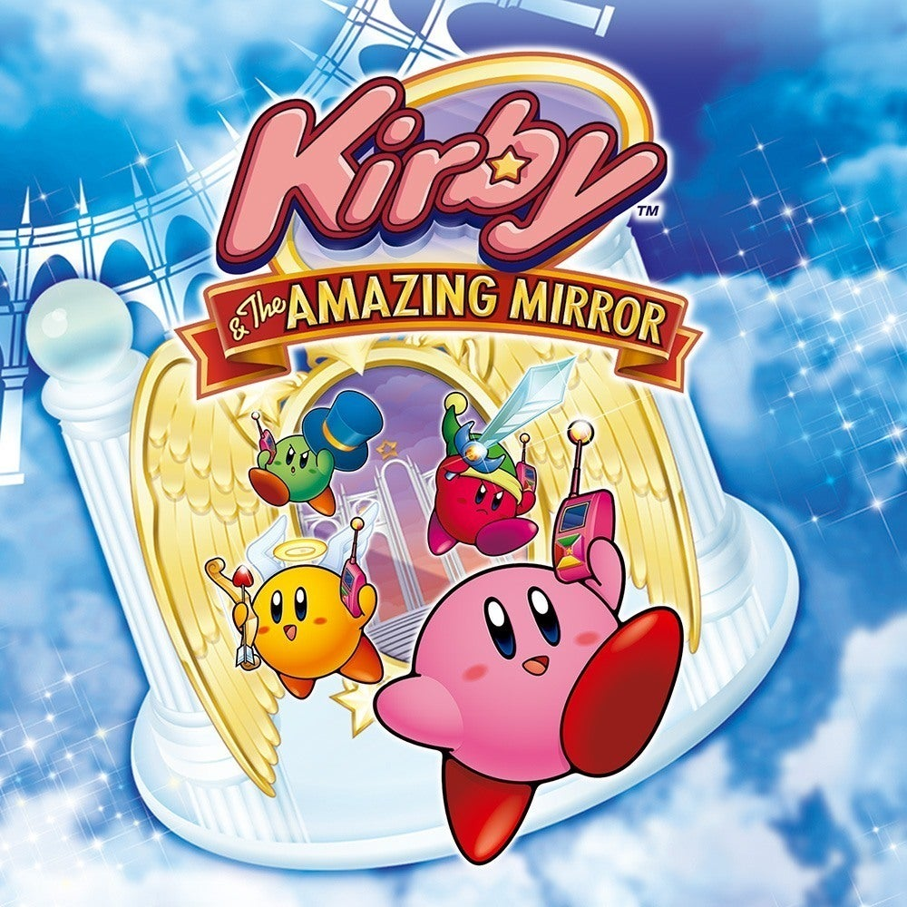

Jogo eletrônico de luta é um gênero de videogame baseado em combate corpo a corpo entre um número
limitado de personagens, em um estágio em que os limites são fixos. Os personagens lutam entre si até
derrotar seus oponentes ou o tempo expirar. As partidas normalmente consistem em várias rodadas, em uma
arena, com cada personagem tendo habilidades diferentes, mas é relativamente viável escolher. Os
jogadores devem dominar técnicas como bloquear, contra-atacar e encadear ataques em "combos".
Jogo de plataforma, também conhecido como jump 'n' run, é um subgênero de jogos eletrônicos de ação em que o objetivo principal é mover o personagem do jogador entre pontos em um ambiente. Os jogos de plataforma são caracterizados por níveis que consistem em terrenos irregulares e plataformas suspensas de altura variável que exigem pular e escalar para atravessar

Celeste é um jogo eletrônico de plataforma desenvolvido pelos canadenses Maddy Thorson e Noel Berry, com arte feita pelo estúdio brasileiro MiniBoss. O jogo foi originalmente criado como um protótipo de quatro dias durante uma game jam, e depois foi expandido para o seu lançamento completo.

Super Mario Odyssey é um jogo de plataforma desenvolvido pela Nintendo Entertainment Planning & Development e publicado pela Nintendo. Foi lançado mundialmente em 27 de outubro de 2017 exclusivamente para o Nintendo Switch

Diferente dos outros jogos, Kirby & the Amazing Mirror é um tipo de labirinto, um jogo no estilo Metroidvania. O mapa do jogo se divide em várias direções e (considerando que você possua todos os poderes), você pode ir livremente para qualquer lugar em qualquer ordem, a não ser na parte final. O jogo também possui um modo Multijogador, onde os outros jogadores controlam os outros Kirbies e também podem explorar o mundo do jogo de forma independente